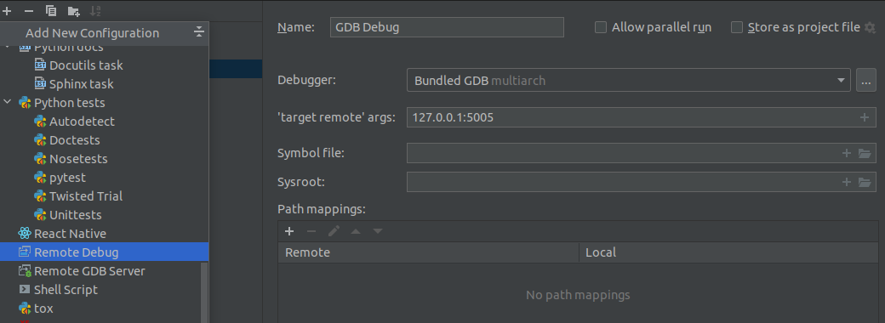

Developer Documentation
Variable names
Use snake_case for all variables. In addition, for preprocessor constants and enum members we use capital letters.
Braces
Omit the braces for a block if it has only a single statement. For example, if with a single statement in the body, or for with a single statement in the body. Keep braces in the following for loop (even if they can be omitted without any change to program logic) since it has two lines in the body.
for (unsigned i = 0; i < 10; i++) {
if (i < 5)
printf("i < 5");
}
Also, in an if-then-else block, if at least one branch has more than one statement in the body, use braces for all the branches like below:
if (a < 5) {
printf("a < 5");
} else if (a == 5) {
printf("a == 5");
} else {
b = a;
printf("a > 5");
}
instead of:
if (a < 5)
printf("a < 5");
else if (a == 5)
printf("a == 5");
else {
b = a;
printf("a > 5");
}
Formatting files before committing
Run clang-format before committing any changes you make on the source files. clang-format will be available if you install the dev dependencies with conda. Run clang-format as follows:
clang-format -i **/*.[ch]
If you change any python files, please use black and isort to format the python code and then check with flake8 before committing. black, isort and flake8 will be available if you install the dev dependencies with conda.
black .
isort .
flake8
Debugging github actions
tmate can be used to ssh into a github runner instance when the workflow is launched manually from github.
Select the relevant workflow under Actions tab and then click run workflow button and select run with tmate. This will run tmate action in the very beginning of the selected workflow and you will see a ssh address that can be used to connect to the runner instance.
Once connected to the runner instance, to continue the rest of the workflow type the following in the libnomp project directory:
touch continue
Then the workflow will continue and you can monitor the progress on GitHub. If the workflow fails at some point, you can use the session you are connected for debugging. Session will be kept alive for 30 minutes after failure.
More info on tmate can be found here.
Debugging libnomp tests
After installing libnomp, you can debug the test cases using the lnrun script. As a prerequisite you have to install the gdbserver which you can install with:
sudo apt install gdbserver
Use lnrun debug command to host the debugging session. If you want to debug the
test case nomp-api-200:
lnrun debug 200
Additionally, you can set the port and the target device for the specific session.
You can view the available options by lnrun -h debug.
By default the test starts on localhost:5005, and a debug viewer should be connected to this target address. For example, the following figure shows how clion connects to the test case using remote debug.
